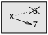

Ce chapitre concerne l’itération, qui permet d’exécuter un bloc d’instructions à plusieurs reprises.
Nous avons vu une sorte d’itération, en utilisant la récursivité, dans la section 5.8. Nous avons aussi vu un autre type, en utilisant un
boucle for, dans la section 4.2. Dans ce chapitre, nous verrons un autre type, en utilisant une instruction while.
Mais je veux d’abord en dire un peu plus sur l’affectation de variables.
Comme vous avez pu le constater, il est légal de confier plusieurs affectations à la même variable. Une nouvelle affectation fait qu’une variable existante se réfère à une nouvelle valeur (et arrête de faire référence à l’ancienne valeur).
>>> x = 5
>>> x
5
>>> x = 7
>>> x
7
La première fois que nous affichons x, sa valeur est 5; la deuxième fois, sa valeur est 7.
Le dessin 7.1 montre à quoi ressemble la réaffectation dans un diagramme d’état.
À ce stade, je veux aborder une source commune de confusion. Parce que Python utilise le signe égal (=) pour l’affectation, il est tentant d’interpréter un énoncé comme a = b comme une proposition mathématique d’égalité; c’est-à-dire que a et b sont égaux. Mais cette interprétation est fausse. Tout d’abord, l’égalité est une relation symétrique et l’affectation ne l’est pas. Par exemple, en mathématiques, si a = 7 alors 7 = a. Mais en Python, l’instruction a = 7 est légale de 7 = a est faux. De plus, en mathématiques, une proposition d’égalité est vraie ou faux pour tous les temps. Si a = b maintenant, alors b sera toujours égal à a. En Python, une instruction d’affectation peut faire deux variables égales, mais ils ne doivent pas rester comme ça:
>>> a = 5
>>> b = a # a and b are now equal
>>> a = 3 # a and b are no longer equal
>>> b
5
La troisième ligne change la valeur de a mais ne change pas la valeur de b, donc elles ne sont pas plus égal La réaffectation des variables est souvent utile, mais vous devez l’utiliser avec prudence. Si les valeurs des variables changent fréquemment, cela peut rendre le code difficile à lire et à déboguer.

Figure 7.1: Diagramme d’état.
Un type courant de réaffectation est une mise à jour, où la nouvelle valeur de la variable dépend sur l’ancien
>>> x = x + 1
Cela signifie “obtenir la valeur actuelle de x, ajouter un, puis mettre à jour x avec la nouvelle valeur.” Si vous essayez de mettre à jour une variable qui n’existe pas, vous obtenez une erreur, car Python évalue le côté droit avant d’assigner une valeur à x:
>>> x = x + 1
NameError: name 'x' is not defined
Avant de pouvoir mettre à jour une variable, vous devez l’initialiser, généralement avec une affectation simple:
>>> x = 0
>>> x = x + 1
La mise à jour d’une variable en ajoutant 1 est appelée un incrément; soustraire 1 est appelé décrément.
Les ordinateurs sont souvent utilisés pour automatiser des tâches répétitives. Répéter des tâches identiques ou similaires sans faire d’erreurs est quelque chose que les ordinateurs font bien et que les gens font mal. Dans un programme informatique, la répétition est aussi appelée itération. Nous avons déjà vu deux fonctions, countdown et print_n, qui itèrent en utilisant la récursivité. Comme l’itération est si courante, Python fournit des fonctionnalités de langage pour le rendre plus facile. Un est la déclaration for que nous avons vue à la section 4.2. Nous y reviendrons plus tard. Une autre est la boucle while. Voici une version du compte à rebours qui utilise une instruction while:
def countdown(n):
while n > 0:
print(n)
n = n - 1
print('Blastoff!')
Vous pouvez presque lire la déclaration while comme si c’était l’anglais. Cela signifie que “Alors que n est plus grand que 0, affiche la valeur de n puis décrémente n. Lorsque vous arrivez à 0, affichez le mot blastoff”
Plus formellement, voici le déroulement de l’exécution: 1. Déterminez si la condition est vraie ou fausse. 2. Si la valeur est false, quittez l’instruction while et continuez l’exécution à l’instruction suivante. 3. Si la condition est vraie, lancez le corps et retournez à l’étape 1.
Ce type de flux est appelé une boucle car la troisième étape est bouclée vers le haut. Le corps de la boucle devrait changer la valeur d’une ou plusieurs variables pour que la condition devient finalement faux et la boucle se termine. Sinon, la boucle se répètera pour toujours, qui s’appelle une boucle infinie. Une source d’amusement sans fin pour les informaticiens est l’observation que les instructions sur le shampooing, “Lather, rinse, repeat”, est une boucle infinie. Dans le cas du compte à rebours, on peut prouver que la boucle se termine: si n est zéro ou négatif, le boucle ne fonctionne jamais. Sinon, n diminue chaque fois à travers la boucle, donc finalement nous doivent arriver à 0. Pour d’autres boucles, ce n’est pas si facile à dire. Par exemple:
def sequence(n):
while n != 1:
print(n)
if n % 2 == 0: # n is even
n = n / 2
else: # n is odd
n = n * 3 + 1
La condition pour cette boucle est n! = 1, donc la boucle continuera jusqu’à ce que n soit 1, ce qui rend la condition fausse. À chaque fois dans la boucle, le programme affiche la valeur de n et vérifie ensuite si c’est pair ou impair. Si c’est pair, n est divisé par 2. S’il est impair, la valeur de n est remplacée par n * 3 + 1. Par exemple, si l’argument passé à la séquence est 3, les valeurs résultantes de n sont 3, 10, 5, 16, 8, 4, 2, 1. Comme n augmente et diminue parfois, il n’ya pas de preuve évidente que n atteindra 1, ou que le programme se termine. Pour certaines valeurs particulières de n, nous pouvons prouver la términaison. Par exemple, si la valeur de départ est une puissance de deux, n sera pair à chaque fois dans la boucle jusqu’à ce qu’il atteigne 1. L’exemple précédent se termine par une telle séquence, à partir de 16. La question difficile est de savoir si nous pouvons prouver que ce programme se termine pour toutes les valeurs positives de n. Jusqu’à présent, personne n’a été capable de le prouver ou de le réfuter! Voyez collatz conjecture)
En guise d’exercice, réécrivez la fonction print_n de la section 5.8 en utilisant l’itération au lieu de récursivité.
Parfois, vous ne savez pas qu’il est temps de terminer une boucle jusqu’à ce que vous atteigniez la moitié du corps. Dans ce cas, vous pouvez utiliser l’instruction break pour sortir de la boucle. Par exemple, supposons que vous souhaitiez saisir les informations de l’utilisateur jusqu’à ce qu’elles soient saisies. Vous pourriez écrire:
while True:
line = input('> ')
if line == 'done':
break
print(line)
print('Done!')
La condition de la boucle est True, ce qui est toujours vrai, donc la boucle s’exécute jusqu’à ce qu’elle atteigne la déclaration de rupture. À chaque fois, l’utilisateur est invité à choisir une option. Si l’utilisateur type ‘done’ (terminé), l’ instruction break quitte la boucle. Sinon, le programme reimprime ce que l’utilisateur type et retourne au sommet de la boucle. Voici un exemple:
> not done
not done
> done
Done!
Cette façon d’écrire des boucles est commune car vous pouvez vérifier la condition n’importe où dans la boucle (pas seulement en haut) et vous pouvez exprimer la condition d’arrêt de manière affirmative (“arretez quand cela se produit “) plutôt que négativement (” continuez jusqu’à ce que cela arrive “).
Les boucles sont souvent utilisées dans les programmes qui calculent des résultats numériques en commençant par une réponse approximative et en l’améliorant de manière itérative. Par exemple, une méthode de calcul des racines carrées est la méthode de Newton. Supposons que vous voulez savoir la racine carrée de a. Si vous commencez avec presque n’importe quelle estimation, x, vous pouvez calculer une meilleure estimation avec la formule suivante:
y = (x + a/x) / 2
Par exemple, si a est 4 et que x est 3:
>>> a = 4
>>> x = 3
>>> y = (x + a / x) / 2
>>> y
2.16666666667
Le résultat est plus proche de la réponse correcte (4 = 2). Si nous répétons le processus avec le nouveau estimation, il devient encore plus proche:
>>> x = y
>>> y = (x + a / x) / 2
>>> y
2.00641025641
Après quelques mises à jour supplémentaires, l’estimation est presque exacte:
>>> x = y
>>> y = (x + a / x) / 2
>>> y
2.00001024003
>>> x = y
>>> y = (x + a / x) / 2
>>> y
2.00000000003
En général, nous ne savons pas combien de temps il faut pour arriver à la bonne réponse, mais on sait quand on arrive là-bas car le devis cesse de changer:
>>> x = y
>>> y = (x + a / x) / 2
>>> y
2.0
>>> x = y
>>> y = (x + a / x) / 2
>>> y
2.0
Lorsque y == x, on peut s’arrêter. Voici une boucle qui commence par une estimation initiale, x, et l’améliore jusqu’à ce qu’elle cesse de changer:
while True:
print(x)
y = (x + a/x) / 2
if y == x:
break
x = y
Pour la plupart des valeurs de a, cela fonctionne bien, mais en général, il est dangereux de tester l’égalité des flottants. Les valeurs à virgule flottante sont approximativement correctes: la plupart des nombres rationnels, comme 1/3, et les nombres irrationnels, comme 2, ne peuvent pas être représentés exactement avec un flottant. Plutôt que de vérifier si x et y sont exactement égaux, il est préférable d’utiliser la fonction intégrée abs pour calculer la valeur absolue, ou l’ampleur, de la différence entre eux:
if abs(y-x) < epsilon: break Où epsilon a une valeur comme 0.0000001 qui détermine la proximité est assez proche.
La méthode de Newton est un exemple d’algorithme: c’est un processus mécanique pour résoudre un catégorie de problèmes (dans ce cas, calcul des racines carrées).n
Pour comprendre ce qu’est un algorithme, il peut être utile de commencer par quelque chose qui n’est pas un algorithme. Lorsque vous avez appris à multiplier des nombres à un chiffre, vous avez probablement mémorisé la table de multiplication. En effet, vous avez mémorisé 100 solutions spécifiques. Ce genre de connaissance n’est pas algorithmique. Mais si vous étiez “paresseux”, vous avez peut-être appris quelques astuces. Par exemple, pour trouver le produit de n et 9, vous pouvez écrire n-1 comme premier chiffre et 10-n comme deuxième chiffre. Cette astuce est une solution générale pour multiplier un nombre à un chiffre par 9. C’est un algorithme! De même, les techniques que vous avez apprises pour l’addition avec transport, la soustraction avec emprunt et la division longue sont toutes des algorithmes. L’une des caractéristiques des algorithmes est que ils n’ont besoin d’aucune intelligence pour effectuer. Ce sont des processus mécaniques où chaque étape découle de la dernière selon un ensemble simple de règles. L’exécution d’algorithmes est ennuyeuse, mais leur conception est intéressante, un défi intellectuel et constitue un élément central de l’informatique. Certaines des choses que les gens font naturellement, sans difficulté, ni pensée consciente, sont: le plus difficile à exprimer algorithmiquement. Comprendre le langage naturel est un bon exemple. Nous le faisons tous, mais jusqu’à présent, personne n’a pu expliquer comment nous le faisons, du moins pas sous la forme d’un algorithme.
Lorsque vous commencez à écrire de plus gros programmes, vous risquez de devoir passer plus de temps à déboguer. Plus de code signifie plus de chances de faire une erreur et plus d’endroits où les bogues peuvent se cacher. Un moyen de réduire votre temps de débogage est le “débogage par bissection”. Par exemple, s’il y a sont 100 lignes dans votre programme et vous les vérifiez un par un, cela prendrait 100 étapes. Au lieu de cela, essayez de briser le problème en deux. Regardez au milieu du programme, ou à proximité, pour une valeur intermédiaire que vous pouvez vérifier. Ajouter un relevé d’impression (ou autre chose qui a un effet vérifiable) et exécuter le programme. Si la vérification à mi-parcours est incorrecte, il doit y avoir un problème dans la première moitié du programme. Si c’est correct, le problème est dans la seconde moitié. Chaque fois que vous effectuez une vérification comme celle-ci, vous divisez par deux le nombre de lignes à rechercher. Après six étapes (moins de 100), vous seriez réduit à une ou deux lignes de code, au moins en théorie. En pratique, il n’est pas toujours évident de savoir ce que le “milieu du programme” est et n’est pas toujours possible de vérifier. Cela n’a aucun sens de compter les lignes et de trouver le point médian exact. Au lieu, penser à des endroits du programme où il peut y avoir des erreurs et des endroits faciles à mettre un checkpoint. Ensuite, choisissez un endroit où vous pensez que les chances sont à peu près les mêmes le bug est avant ou après la vérification.
réaffectation: attribuer une nouvelle valeur à une variable qui existe déjà.
update: Affectation où la nouvelle valeur de la variable dépend de l’ancienne.
initialization: une affectation qui donne une valeur initiale à une variable qui sera mise à jour.
increment: une mise à jour qui augmente la valeur d’une variable (souvent par une seule).
décrément: une mise à jour qui diminue la valeur d’une variable.
iteration: exécution répétée d’un ensemble d’instructions à l’aide d’un appel de fonction récursif ou une boucle.
boucle infinie: boucle dans laquelle la condition de terminaison n’est jamais satisfaite.
algorithme: un processus général pour résoudre une catégorie de problèmes.
Exercice 1
Copiez la boucle de la section 7.5 et encapsulez-la dans une fonction appelée mysqrt prend un comme paramètre, choisit une valeur raisonnable de x et renvoie une estimation de la racine carrée de une. Pour le tester, écrivez une fonction nommée test_square_root qui imprime un tableau comme celui-ci:
a mysqrt(a) math.sqrt(a) diff
- --------- ------------ ----
1.0 1.0 1.0 0.0
2.0 1.41421356237 1.41421356237 2.22044604925e-16
3.0 1.73205080757 1.73205080757 0.0
4.0 2.0 2.0 0.0
5.0 2.2360679775 2.2360679775 0.0
6.0 2.44948974278 2.44948974278 0.0
7.0 2.64575131106 2.64575131106 0.0
8.0 2.82842712475 2.82842712475 4.4408920985e-16
9.0 3.0 3.0 0.0
La première colonne est un nombre, a; la deuxième colonne est la racine carrée d’un calcul avec mysqrt; la troisième colonne est la racine carrée calculée par math.sqrt; la quatrième colonne est la valeur absolue de la différence entre les deux estimations.
Exercice 2
La fonction intégrée eval prend une chaîne et l’évalue à l’aide de l’interpréteur Python. Par exemple:
>>> eval('1 + 2 * 3')
7
>>> import math
>>> eval('math.sqrt(5)')
2.2360679774997898
>>> eval('type(math.pi)')
<class 'float'>
Ecrire une fonction appelée eval_loop qui invite de manière itérative l’utilisateur, prend l’entrée résultante et l’évalue en utilisant eval et imprime le résultat. Il doit continuer jusqu’à ce que l’utilisateur entre “done”, puis renvoyer la valeur de la dernière expression évalué.
Exercice 7.3.
Le mathématicien Srinivasa Ramanujan a trouvé une série infinie qui peut être utilisée pour générer une approximation numérique de 1 / π:
∞
1/π = 2√2 / 9801 ∑ (4k)!(1103+26390k) / (k!)4 3964k
k=0
Ecrivez une fonction appelée estimation_pi qui utilise cette formule pour calculer et renvoyer une estimation de π. Il devrait utiliser une boucle while pour calculer les termes de la sommation jusqu’à ce que le dernier terme soit plus petit que 1e-15 (qui est la notation Python pour 10-15). Vous pouvez vérifier le résultat en le comparant à math.pi. Solution: http://thinkpython2.com/code/pi.py